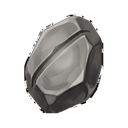
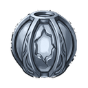
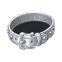
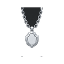

Ice Fortress D4
DungeonT4Lv 35-40
Entry key:  Silver Key T4
Silver Key T4
Creatures
| Creature | Level | Drops |
|---|---|---|
| Frost Wisp | Lv 35 |  Upgrade Stone T3 Silver Ring T4 Silver Ring T4 |
| Glacial Prowler | Lv 37 | Upgrade Stone T3  Silver Dungeon Core |
| Dungeon Guardian T4 | Lv 40 | Upgrade Stone T3  Silver Earring T4 Silver Earring T4 |
| Dungeon Lord T4 Boss | Lv 40 |  Normal Essence Upgrade Stone T3 Normal Essence Upgrade Stone T3  Silver Belt T4 Silver Dungeon Core Silver Necklace T4 |